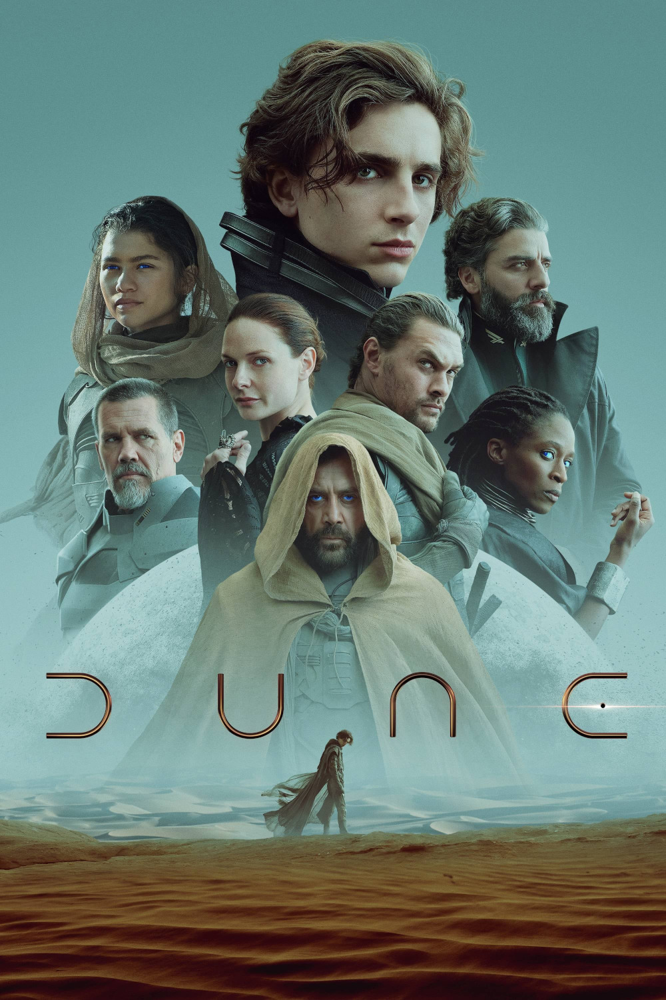

Мировая премьера: 22 октября 2021
Слоган: Час настал.
Сюжет: Пол Атрейдес – умный и одарённый юноша, которому предначертана судьба, чьё величие он пока не в состоянии постичь. Он должен отправиться на самую опасную планету во вселенной, чтобы защитить будущее своей семьи и народа. Зловещие силы ведут здесь войну за невероятно ценный ресурс, который добывают лишь на этой планете – вещество, способное раскрыть грандиозный потенциал всего человечества. Выжить удастся лишь тем, кто сможет победить свой страх.
Режиссёр: Дени Вильнёв
В основе: Роман Фрэнка Герберта "Дюна" (США, 1965)
Серия: Дюна
В ролях:
| Тимоти Шаламе | Пол Атрейдес |
| Ребекка Фергюсон | Леди Джессика Атрейдес |
| Оскар Айзек | Герцог Лето Атрейдес |
| Шэрон Дункан-Брюстер | Доктор Лайет Кайнс |
| Хавьер Бардем | Стилгар |
| Джейсон Момоа | Дункан Айдахо |
| Шарлотта Рэмплинг | Преподобная мать Гайя Елена Мохайам |
| Джош Бролин | Гарни Холлек |
| Стеллан Скарсгард | Барон Владимир Харконнен |
| Стивен МакКинли Хендерсон | Сафир Хават |
| Дэйв Батиста | Глоссу Раббан |
| Зендая | Чани |
| Чан Чэнь | Доктор Веллингтон Юэ |
| Бабс Олусанмокун | Джемис |
| Давид Дастмалчян | Питер де Врис |
| Голда Рошевель | Шадут Мейпс |
| Роджер Юань | Лейтенант Ланвиль |
Бюджет: $ 165 млн.
Кассовые сборы в США: $ 108 млн.
Кассовые сборы в мире: $ 411 млн.
Продолжительность: 2 ч. 27 мин.
Рейтинг: 8.0